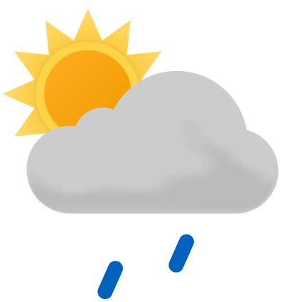
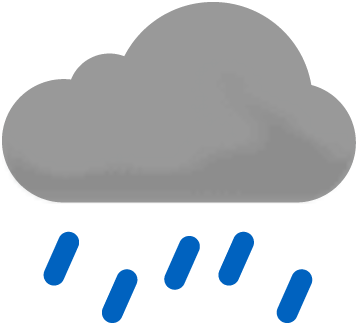

Dette er et eksempel på en ingress. Ingresser er realtivt korte og fanger essensen i en artikkel i et par tre setninger. Du kan kopiere denne teksten og tilpasse størrelsen til ditt design.
Verdens Gang (VG) er en norsk riksdekkende tabloidavis som utkommer både på papir og i elektronisk form. VG var Norges største papiravis fra 1981 og fram til 2010 målt i opplag, men ble i 2010 forbigått av Aftenposten.
Dagbladet er en norsk dagsavis som utgis på bokmål, grunnlagt i 1869. Avisens journalistiske kjerneområder er nyheter, sport, kultur og underholdning.
Aftenposten er et norsk mediehus og en dagsavis og med riksdekkende distribusjon. Avisen er basert i Oslo. Den er Norges største papiravis målt i opplag.
Norsk rikskringkasting AS, i dagligtale og markedsføring mest kjent under forkortelsen NRK, er et norsk statseid kringkastingsselskap som tilbyr medieinnhold på radio, TV, strømmetjeneste og internett.
H-avis, kort for Haugesund avis, er en avis som dekker det meste av nyheter på Haugalandet. De dekker alt fra politikk til sport.
Digitalisering og enklare handel over landegrensene gjer at det stadig kjem nye aktørar til, og det gir ein tøffare konkurranse. Det er viktigare enn nokon gong å vite kva som påverkar forbrukaråtferd. Så kva er eigentleg det?
Været i dag:
| Dag | Formiddag | Ettermiddag | Kveld |
|---|---|---|---|
| Fredag |  |  |